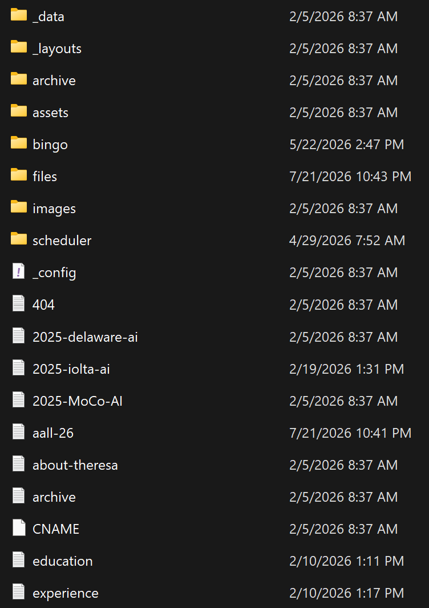
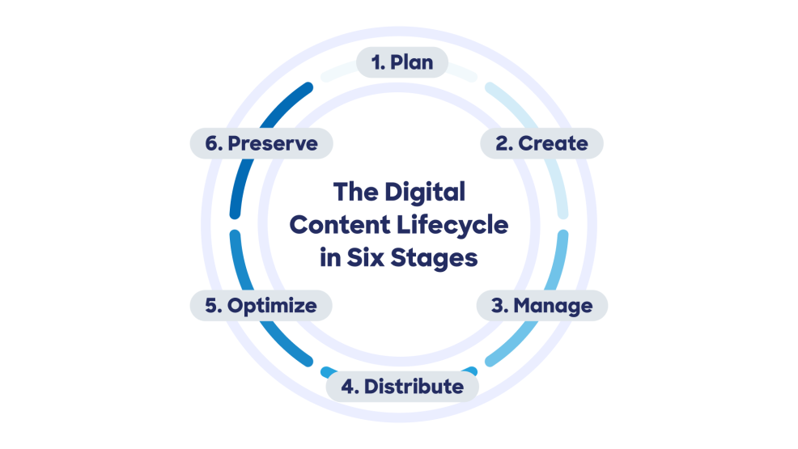
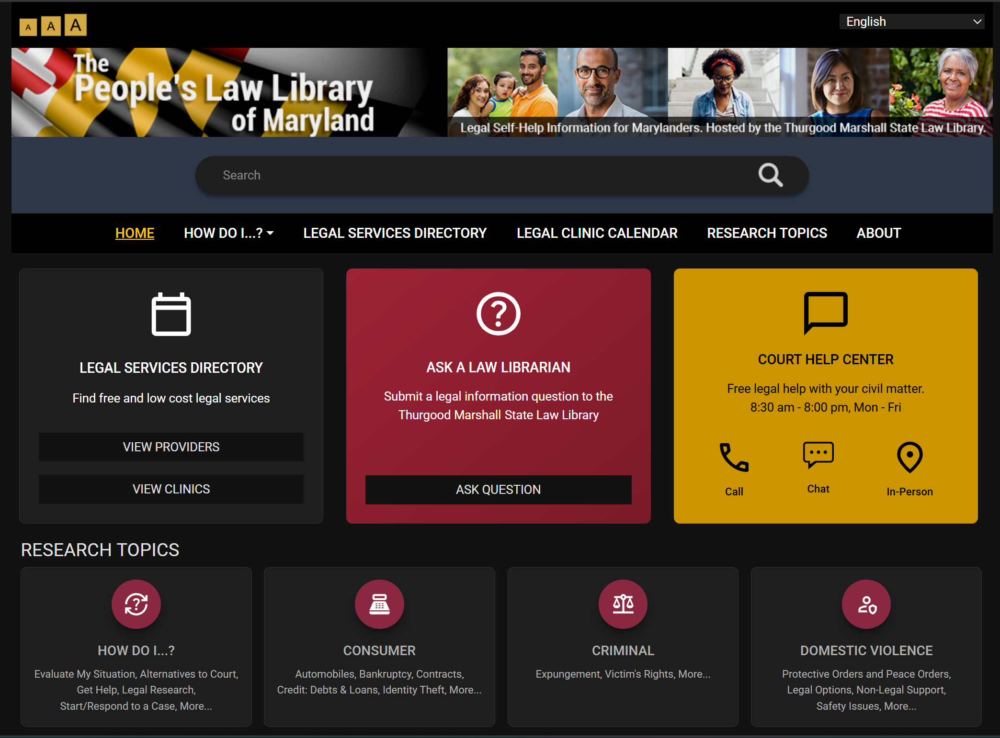

MMLIS 562: Transformative Technologies in Library and Information Science
2026-09-24
Takeaway: A library website is an ongoing organizational system.

A CMS coordinates:
Definition: A system for creating, organizing, publishing, and maintaining web content.
One ecosystem, different functions.
| System | Main job |
|---|---|
| CMS | Manage web content |
| Website | Explain how to use library |
| Catalog | Find library materials |
| Discovery interface | Search across resources |

The digital content lifecycle in six stages
Users do not see the CMS. They see:
A good user interface distills complex systems into a simple, intuitive experience
Content should adapt to:
Goal: Preserve clarity while the layout changes.
Distinct panels can organize different user needs:
Purpose: Visual grouping should speed navigation.

Library website organized as a bento-box interface
| Concept | Question |
|---|---|
| Usability | Can people use it easily? |
| Accessibility | Can people with disabilities use it? |
| Universal design | Did we design for variation from the start? |
Accessibility is a design and governance responsibility.
A CMS reflects organizational values and priorities.
Theme inspiration: Anything But Binary
AI helped make this presentation